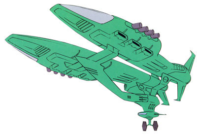

| Papua Zeon Space Force Carrier |
|
|  | |
General and Technical Data |
|
|
Class: Papua Unit type: supply ship Manufacturer: Principality of Zeon Operator: Principality of Zeon First deployment: October UC 0069 Dimensions: overall length 300 meters Propulsion: 2x rocket engine Hangar capacity: 4 Launch catapults: 0 Fixed armaments: 8x 2-barrel AA machinegun turret |
 RPG quick stats sheet
RPG quick stats sheet | Technical and Historical Notes | |
|
One of the Principality of Zeon's first ships, the Papua class transport ship remained the mainstay of the Zeon logistical fleet for many years until the introduction of the Pazock class. The Papua class ships saw service throughout the One Year War, supplying ships on the front lines independently. These Papuas often carried a small defensive/work contingent of Gattle space fighters and/or Zakus for loading and defense, capable of fitting four mobile suits into the twin hangars in addition to logistics and support equipment.
While the Papua is currently being phased out in favor for a combination of the more efficient Pazock and more deadly Musai, it is still an effective battleship in its own right, and it is expected Papuas will remain in service throughout the end of the war even if no more are being built at New Berlin. |
|